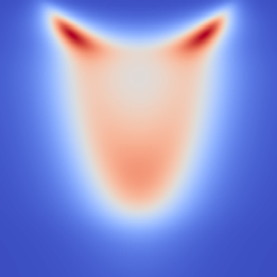
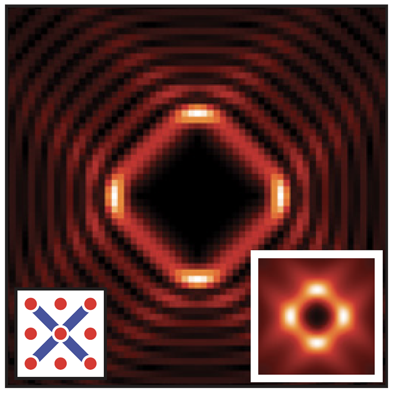

{kind=link}
{kind=link}
{kind=link}
{kind=link}
{kind=link}
{kind=link}
- Steven Kivelson, "Nematic Quantum Hall Fluid Without Stripes", Journal Club for Condensed Matter Physics (2018).
Research
My interest in the field of condensed matter physics lie primarily in the theoretical understanding of correlated quantum matter. The topics of my research revolve around a rich set of phenomena in topological superconductors, copper- and iron-based high temperature superconductors, as well as quantum Hall systems, and spin liquids. Through the use of quantum field theory, symmetry group analysis, and large-scale numerical techniques, I hope to further the understandings of new phases of matter and emergent phenomena in strongly correlated systems. I am also interested in the development and implementation of algorithms for large-scale numerical computations on quantum systems.
Publications
Metal-to-insulator transition in Pt-doped TiSe2 driven by emergent network of narrow transport channels

Spectroscopic fingerprints of many-body renormalizations in 1T−TiSe2
Magnetotransport in Fe-intercalated TS2: The comparison between T = Ti and Ta

Topological superconductivity in Dirac honeycomb systems

Pomeranchuk Instability of Composite Fermi Liquids
Emergent topological superconductivity at nematic domain wall of FeSe
{kind=link}
Non-Abelian phases in two-component ν=2/3 fractional quantum Hall states: Emergence of Fibonacci anyons
{kind=link}
Identifying the 'Fingerprint' of Antiferromagnetic Spin-Fluctuations in Iron-Pnictide Cooper Pairing
Superconducting proximity effect in topological metals

{kind=link}
Signatures of unconventional pairing in near-vortex electronic structure of
LiFeAs
Talks and Posters
- APS March Meeting (2019) talk
- APS March Meeting (2018) talk1, talk2, talk3
- Order, Fluctuations, and Strong Correlations: New Platforms and Developments (2017) talk
- Gordon Research Conference on Correlated Electron Systems (2016) poster
- APS March Meeting (2016) talk
- Gordon Research Conference on Superconductivity (2015) poster
- APS March Meeting (2015) talk1, talk2
- EMN Summer Meeting (2014) talk
- APS March Meeting (2014) talk
- APS March Meeting (2013) talk
- APS March Meeting (2012) talk
- APS March Meeting (2011) talk
Projects
- ExactDiagonalization.jl: Exact diagonalization for a generic many body Hamiltonian (Julia)
- LatticeTools.jl: Toolkit for lattice construction and symmetry analyses useful for tight binding models (Julia)
- HartreeFockBogoliubov.jl: Hartree-Fock-Bogoliubov solver for electronic systems (Julia)
- exactdiag: Exact diagonalization for a generic many body Hamiltonian (C++)
- PiTensor: Python wrapper for iTensor
- PomeranchukMonteCarlo: Variational Monte Carlo for Composite Fermi Liquid (C++)